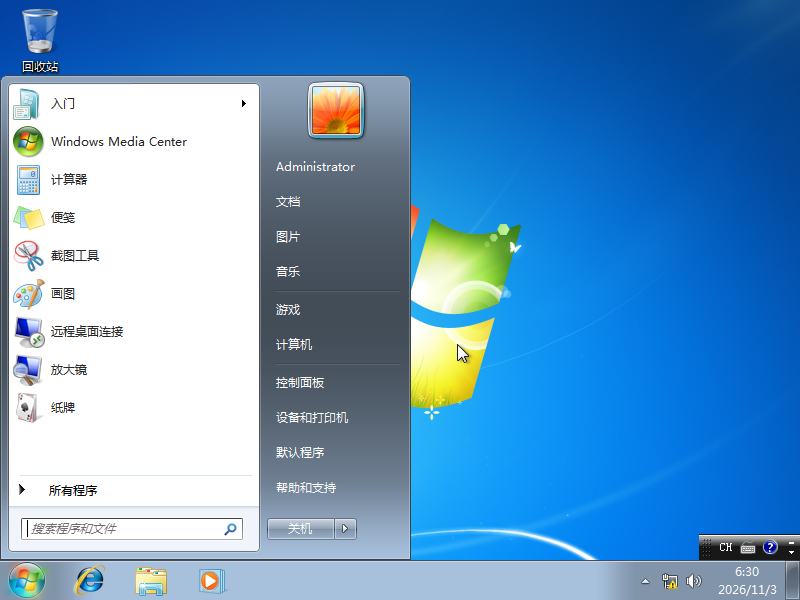
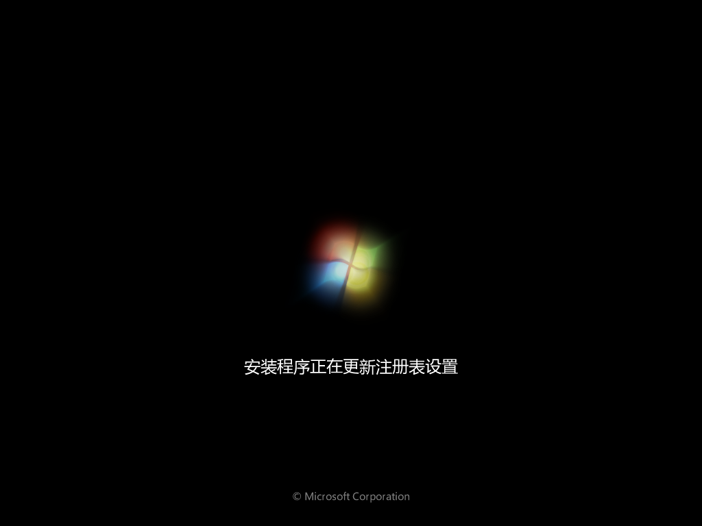
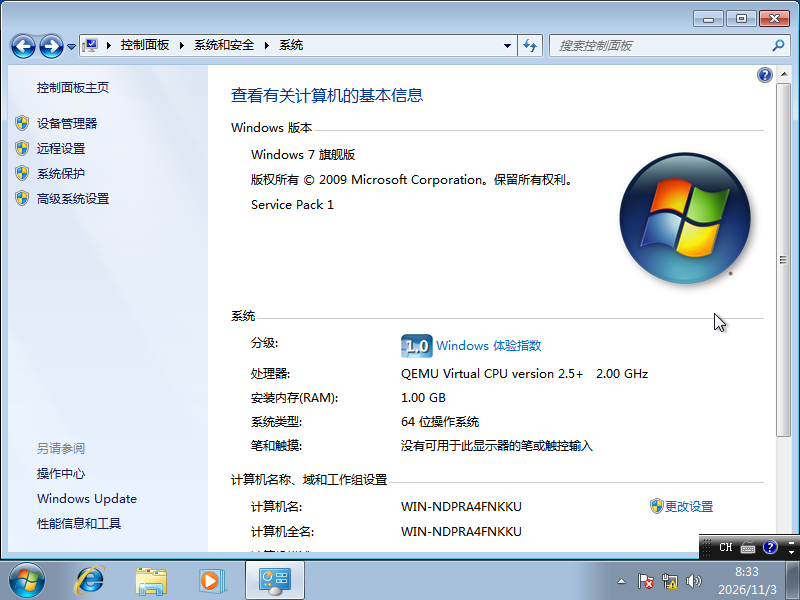
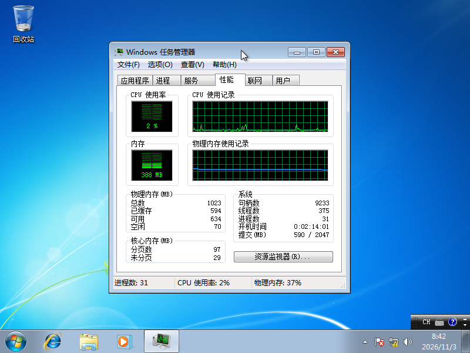
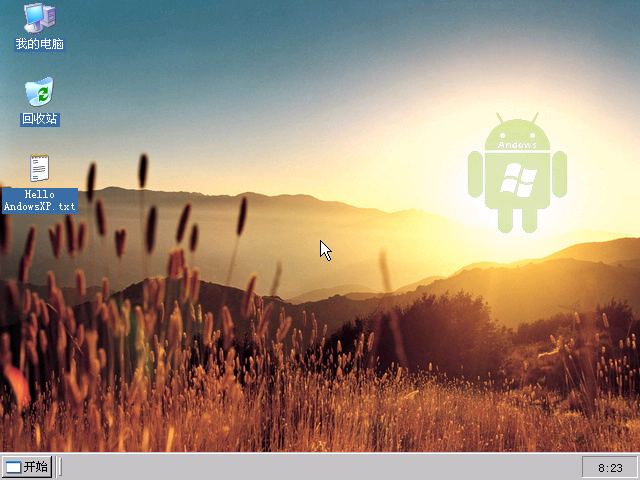
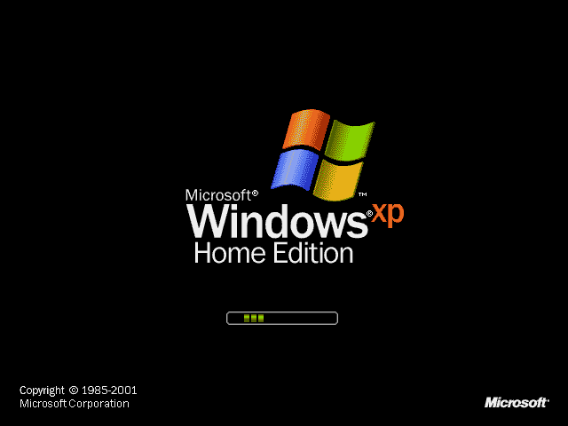
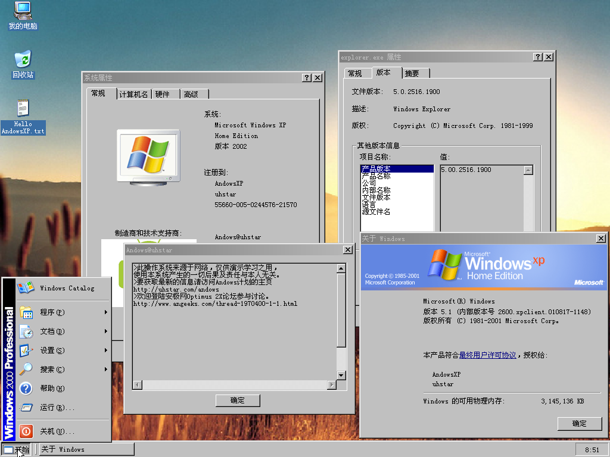
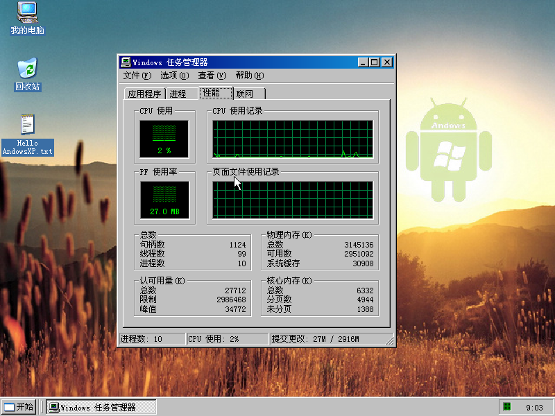

Windows 7
Windows7旗舰版




| 架构 | 语言 | 驱动 | 激活 | 精简 | 密码 |
| x86_64 | 中文 | ✗ | ✗ | ✗ | 无 |
详细信息
校验码
ce704aba0fae3ea3713bf35c255f5bf7b4ac6d160e4f5b358b661e8416515cc0 *windows7旗舰版免安装未激活管理员无密码.qcow2
9d4d81d962bb4565a190caa850167d2b8cbe1e35b8bbdad964259b59ca5decc2 *windows7旗舰版免安装未激活管理员无密码.compressed.qcow2
b70c8ca18ee986b1f77a837c12bef147fc84464bed8f3c2506085cb576799fa4 *windows7旗舰版免安装未激活管理员无密码.7z
安装命令
qemu-system-x86_64.exe -cpu qemu64 -m 1024 -smp 1,cores=1 -drive file=windows7.qcow2 -cdrom F:\iso\cn_windows_7_ultimate_with_sp1_x64_dvd_u_677408.iso -device virtio-gpu-pci -device intel-hda -device hda-output,audiodev=snd0 -audiodev sdl,id=snd0
下载地址: https://pan.moe/s/rdOMCp
安装日期: 2026/11/03
Windows XP
AndowsXP




详细信息
校验码
dfb174de27d23051716ca5489cacac93898c5a4c179a653ada28132f801a19fd *andows.img
fd7b29a8a9afd2bfc25687ec25ae144215ba14308aee86c6874e95de60a32e8e *andows.7z
image: andows.img
file format: raw
virtual size: 301 MiB (315334656 bytes)
disk size: 301 MiB
Child node '/file':
filename: andows.img
protocol type: file
file length: 301 MiB (315334656 bytes)
disk size: 301 MiB
下载地址: https://pan.moe/s/zjX2S0
收集于网络。这是对Windows XP 32位版精简美化的系统，特点是大小仅300MB，可以在手机上流畅运行。
其他工具
qcow2空白镜像大全
下载地址: https://pan.moe/s/2VnYsE
失效链接
https://pan.moe/s/OXKUZ?password=j55azz 文件列表：64Gwin7旗舰版.qcow2、16Gwin7build7000ultimate.qcow2
https://pan.huang1111.cn/s/j94NFy【Windows 7入门SP1超级精简版】没激活，没密码，免安装。安装镜像来自https://crustywindo.ws/Windows_7_Extreme_Lite
https://pan.huang1111.cn/s/Wgkyf3【Windows 7旗舰版SP1】没激活，没密码，免安装。
https://pan.huang1111.cn/s/a4MahG【Windows 7企业版】没激活，没密码，免安装。
https://pan.huang1111.cn/s/VD8aUd【Windows ThinPC】没激活，密码同用户名，免安装。
https://pan.huang1111.cn/s/YaKzIA【Windows 7旗舰版】没激活，密码同用户名，免安装。
https://pan.huang1111.cn/s/ZVnOtL【Windows 7旗舰版】没激活，密码同用户名，免安装。
https://pan.huang1111.cn/s/glM6sQ【Windows 7旗舰版】没激活，没密码，免安装。
https://pan.huang1111.cn/s/PlaoSm【Windows XP超级精简版】没激活，没密码，免安装。安装镜像来自https://crustywindo.ws/Windows_XP_75MB_Edition
https://pan.huang1111.cn/s/xx2kHV【Windows 1.03】收集于网络。
https://pan.huang1111.cn/s/1jEzcv【Andows XP】收集于网络。√ 已找回
https://pan.huang1111.cn/s/j8wduy【ReactOS 0.4.14】没激活，没密码，免安装。
https://pan.huang1111.cn/s/EO72tb【qcow2空镜像大全】空白qcow2镜像。√ 已找回
https://pan.huang1111.cn/s/8OQXsQ【Hacker's Keyboard】可以打出特殊键。
https://pan.huang1111.cn/s/b1nRuY【Limbo亮色汉化版】由wusheng233修改。
相关网站